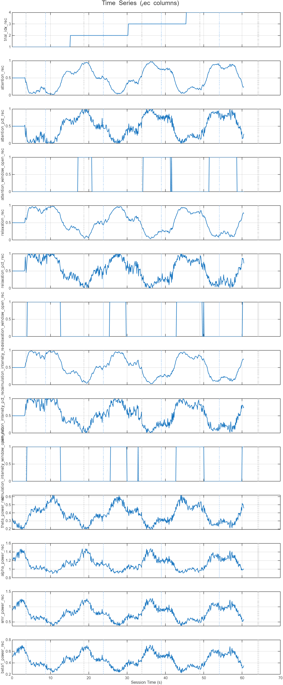
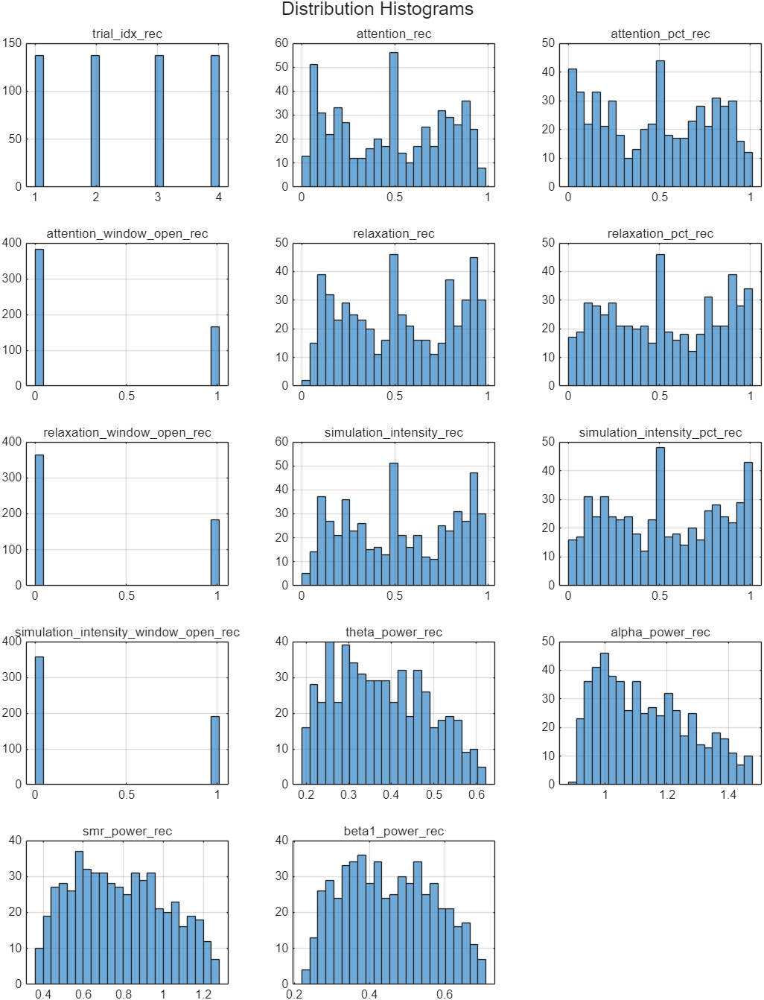
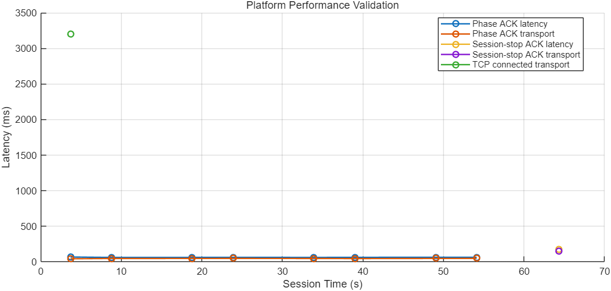

Metrics include phase and session_stop acknowledgment latency.
| section | key | N | mean | std | min | median | max |
|---|---|---|---|---|---|---|---|
| rec | trial_idx_rec | 548 | 2.5000 | 1.1191 | 1 | 2.5000 | 4 |
| rec | attention_rec | 548 | 0.4795 | 0.2927 | 0.0234 | 0.5000 | 0.9732 |
| rec | attention_pct_rec | 548 | 0.4784 | 0.3016 | 0.0033 | 0.5000 | 1 |
| rec | attention_window_open_rec | 548 | 0.3011 | 0.4592 | 0 | 0 | 1 |
| rec | relaxation_rec | 548 | 0.5238 | 0.2914 | 0.0387 | 0.5005 | 0.9770 |
| rec | relaxation_pct_rec | 548 | 0.5249 | 0.3022 | 0.0033 | 0.5000 | 1 |
| rec | relaxation_window_open_rec | 548 | 0.3358 | 0.4727 | 0 | 0 | 1 |
| rec | simulation_intensity_rec | 548 | 0.5265 | 0.2916 | 0.0314 | 0.5000 | 0.9813 |
| rec | simulation_intensity_pct_rec | 548 | 0.5275 | 0.3020 | 0.0033 | 0.5000 | 1 |
| rec | simulation_intensity_window_open_rec | 548 | 0.3485 | 0.4769 | 0 | 0 | 1 |
| rec | theta_power_rec | 548 | 0.3762 | 0.1087 | 0.1916 | 0.3680 | 0.6219 |
| rec | alpha_power_rec | 548 | 1.1317 | 0.1481 | 0.8976 | 1.1075 | 1.4749 |
| rec | smr_power_rec | 548 | 0.7834 | 0.2320 | 0.3613 | 0.7682 | 1.2756 |
| rec | beta1_power_rec | 548 | 0.4522 | 0.1207 | 0.2265 | 0.4469 | 0.7081 |
| log | action_window_close | 4 | |||||
| log | action_window_open | 4 | |||||
| log | enrolled | 1 | |||||
| log | menu_select_monitor | 1 | |||||
| log | monitor_ready | 1 | |||||
| log | phase_a_end | 4 | |||||
| log | phase_a_start | 4 | |||||
| log | phase_ack | 8 | |||||
| log | phase_ack_latency_ms | 8 | |||||
| log | phase_ack_transport_ms | 8 | |||||
| log | phase_b_end | 5 | |||||
| log | phase_b_start | 4 | |||||
| log | scene_loaded | 2 | |||||
| log | scene_unloaded | 1 | |||||
| log | session_stop_ack | 1 | |||||
| log | session_stop_ack_latency_ms | 1 | |||||
| log | session_stop_ack_transport_ms | 1 | |||||
| log | tcp_connected | 1 | |||||
| log | tcp_connected_transport_ms | 1 | |||||
| log | trial_end | 5 | |||||
| log | trial_start | 4 | |||||
| perf | phase_ack_latency_ms | 8 | 64.6459 | 1.9099 | 62.9900 | 64.3340 | 68.9952 |
| perf | phase_ack_transport_ms | 8 | 48.2967 | 1.6413 | 44.4949 | 48.8657 | 49.4249 |
| perf | session_stop_ack_latency_ms | 1 | 172.6041 | 0 | 172.6041 | 172.6041 | 172.6041 |
| perf | session_stop_ack_transport_ms | 1 | 155.0655 | 0 | 155.0655 | 155.0655 | 155.0655 |
| perf | tcp_connected_transport_ms | 1 | 3199.6505 | 0 | 3199.6505 | 3199.6505 | 3199.6505 |
Full CSV: report/summary.csv
| metric | N | mean | std | min | median | max |
|---|---|---|---|---|---|---|
| phase_ack_latency_ms | 8 | 64.6459 | 1.9099 | 62.9900 | 64.3340 | 68.9952 |
| session_stop_ack_latency_ms | 1 | 172.6041 | 0 | 172.6041 | 172.6041 | 172.6041 |
| phase_ack_transport_ms | 8 | 48.2967 | 1.6413 | 44.4949 | 48.8657 | 49.4249 |
| session_stop_ack_transport_ms | 1 | 155.0655 | 0 | 155.0655 | 155.0655 | 155.0655 |
| tcp_connected_transport_ms | 1 | 3199.6505 | 0 | 3199.6505 | 3199.6505 | 3199.6505 |
| unity_sync_transport_ms | 9 | 60.1599 | 35.6227 | 44.4949 | 48.9144 | 155.0655 |
| unity_marker_transport_ms | 23 | 846.0682 | 1372.3203 | 31.0152 | 48.9144 | 3199.6505 |
Full CSV: performance_summary.csv
| t_session_sec | abs_ts | source | kind | key | value | info |
|---|---|---|---|---|---|---|
| 0.0043 | 1785919374.9814 | system | subject | enrolled | 0 | id=SMOKE_MONITOR name= sex= age=0 handedness= note=dual-end smoke test |
| 3.6298 | 1785919378.6069 | matlab | phase | phase_a_start | 1 | dur=5s | send_seq=0 |
| 3.6478 | 1785919378.6248 | matlab | trial | trial_start | 1 | |
| 3.6966 | 1785919378.6737 | unity | marker | tcp_connected | 0 | scene=_Bootstrap | unity_ts=1785919375.474012 | recv_ts=1785919378.673662 | seq=0 | transport_ms=3199.651 | info=127.0.0.1:5555 |
| 3.6966 | 1785919378.6737 | system | latency | tcp_connected_transport_ms | 3199.6505 | scene=_Bootstrap seq=0 endpoint=127.0.0.1:5555 |
| 3.6970 | 1785919378.6740 | unity | marker | menu_select_monitor | 0 | scene=_Bootstrap | unity_ts=1785919375.566904 | recv_ts=1785919378.674011 | seq=1 | transport_ms=3107.107 | info=Game_Monitor |
| 3.6973 | 1785919378.6744 | unity | marker | scene_loaded | 0 | scene=_Bootstrap | unity_ts=1785919375.567904 | recv_ts=1785919378.674402 | seq=2 | transport_ms=3106.498 | info=MainMenu |
| 3.6978 | 1785919378.6748 | unity | marker | scene_unloaded | 0 | scene=_Bootstrap | unity_ts=1785919375.570908 | recv_ts=1785919378.674807 | seq=3 | transport_ms=3103.899 | info=MainMenu |
| 3.6982 | 1785919378.6752 | unity | marker | scene_loaded | 0 | scene=_Bootstrap | unity_ts=1785919375.619905 | recv_ts=1785919378.675207 | seq=4 | transport_ms=3055.302 | info=Game_Monitor |
| 3.6985 | 1785919378.6756 | unity | marker | monitor_ready | 0 | scene=_Bootstrap | unity_ts=1785919375.620904 | recv_ts=1785919378.675557 | seq=5 | transport_ms=3054.653 | info=_Bootstrap |
| 3.6988 | 1785919378.6758 | unity | sync | phase_ack | 0 | scene=_Bootstrap | unity_ts=1785919378.631355 | recv_ts=1785919378.675850 | seq=6 | transport_ms=44.495 | info=A |
| 3.6988 | 1785919378.6758 | system | latency | phase_ack_transport_ms | 44.4949 | phase=A trial=1 ack_seq=6 unity_phase=A |
| 3.6988 | 1785919378.6758 | system | latency | phase_ack_latency_ms | 68.9952 | phase=A trial=1 send_seq=0 ack_seq=6 unity_phase=A |
| 8.7219 | 1785919383.6989 | matlab | phase | phase_a_end | 1 | |
| 8.7223 | 1785919383.6994 | matlab | phase | phase_b_start | 1 | dur=10s | send_seq=139 |
| 8.7853 | 1785919383.7623 | unity | sync | phase_ack | 1 | scene=Game_Monitor | unity_ts=1785919383.713523 | recv_ts=1785919383.762340 | seq=7 | transport_ms=48.817 | info=B |
| 8.7853 | 1785919383.7623 | system | latency | phase_ack_transport_ms | 48.8169 | phase=B trial=1 ack_seq=7 unity_phase=B |
| 8.7853 | 1785919383.7623 | system | latency | phase_ack_latency_ms | 62.9900 | phase=B trial=1 send_seq=139 ack_seq=7 unity_phase=B |
| 18.7230 | 1785919393.7001 | matlab | phase | phase_b_end | 1 | |
| 18.7241 | 1785919393.7011 | matlab | trial | trial_end | 1 | |
| 18.7246 | 1785919393.7017 | matlab | phase | phase_a_start | 2 | dur=5s | send_seq=413 |
| 18.7395 | 1785919393.7165 | matlab | trial | trial_start | 2 | |
| 18.7882 | 1785919393.7652 | unity | sync | phase_ack | 0 | scene=Game_Monitor | unity_ts=1785919393.716303 | recv_ts=1785919393.765217 | seq=8 | transport_ms=48.914 | info=A |
| 18.7882 | 1785919393.7652 | system | latency | phase_ack_transport_ms | 48.9144 | phase=A trial=2 ack_seq=8 unity_phase=A |
| 18.7882 | 1785919393.7652 | system | latency | phase_ack_latency_ms | 63.5421 | phase=A trial=2 send_seq=413 ack_seq=8 unity_phase=A |
| 23.8084 | 1785919398.7855 | matlab | phase | phase_a_end | 2 | |
| 23.8089 | 1785919398.7859 | matlab | phase | phase_b_start | 2 | dur=10s | send_seq=552 |
| 23.8733 | 1785919398.8503 | unity | sync | phase_ack | 1 | scene=Game_Monitor | unity_ts=1785919398.800905 | recv_ts=1785919398.850330 | seq=9 | transport_ms=49.425 | info=B |
| 23.8733 | 1785919398.8503 | system | latency | phase_ack_transport_ms | 49.4249 | phase=B trial=2 ack_seq=9 unity_phase=B |
| 23.8733 | 1785919398.8503 | system | latency | phase_ack_latency_ms | 64.3950 | phase=B trial=2 send_seq=552 ack_seq=9 unity_phase=B |
| 23.8736 | 1785919398.8507 | unity | marker | action_window_open | 1 | scene=Game_Monitor | unity_ts=1785919398.800905 | recv_ts=1785919398.850662 | seq=10 | transport_ms=49.757 | info=monitor_attention_ready |
| 24.4229 | 1785919399.3999 | unity | marker | action_window_close | 0 | scene=Game_Monitor | unity_ts=1785919399.368547 | recv_ts=1785919399.399918 | seq=11 | transport_ms=31.371 | info=monitor_attention_ready |
| 33.8389 | 1785919408.8159 | matlab | phase | phase_b_end | 2 | |
| 33.8395 | 1785919408.8165 | matlab | trial | trial_end | 2 | |
| 33.8399 | 1785919408.8170 | matlab | phase | phase_a_start | 3 | dur=5s | send_seq=826 |
| 33.8541 | 1785919408.8312 | matlab | trial | trial_start | 3 | |
| 33.9031 | 1785919408.8801 | unity | sync | phase_ack | 0 | scene=Game_Monitor | unity_ts=1785919408.831429 | recv_ts=1785919408.880149 | seq=12 | transport_ms=48.720 | info=A |
| 33.9031 | 1785919408.8801 | system | latency | phase_ack_transport_ms | 48.7199 | phase=A trial=3 ack_seq=12 unity_phase=A |
| 33.9031 | 1785919408.8801 | system | latency | phase_ack_latency_ms | 63.1990 | phase=A trial=3 send_seq=826 ack_seq=12 unity_phase=A |
| 38.9285 | 1785919413.9055 | matlab | phase | phase_a_end | 3 | |
| 38.9291 | 1785919413.9062 | matlab | phase | phase_b_start | 3 | dur=10s | send_seq=965 |
| 38.9934 | 1785919413.9704 | unity | sync | phase_ack | 1 | scene=Game_Monitor | unity_ts=1785919413.922895 | recv_ts=1785919413.970445 | seq=13 | transport_ms=47.550 | info=B |
| 38.9934 | 1785919413.9704 | system | latency | phase_ack_transport_ms | 47.5497 | phase=B trial=3 ack_seq=13 unity_phase=B |
| 38.9934 | 1785919413.9704 | system | latency | phase_ack_latency_ms | 64.2731 | phase=B trial=3 send_seq=965 ack_seq=13 unity_phase=B |
| 38.9937 | 1785919413.9708 | unity | marker | action_window_open | 1 | scene=Game_Monitor | unity_ts=1785919413.922895 | recv_ts=1785919413.970803 | seq=14 | transport_ms=47.908 | info=monitor_attention_ready |
| 44.9432 | 1785919419.9202 | unity | marker | action_window_close | 0 | scene=Game_Monitor | unity_ts=1785919419.888827 | recv_ts=1785919419.920207 | seq=15 | transport_ms=31.380 | info=monitor_attention_ready |
| 45.1620 | 1785919420.1390 | unity | marker | action_window_open | 1 | scene=Game_Monitor | unity_ts=1785919420.108010 | recv_ts=1785919420.139025 | seq=16 | transport_ms=31.015 | info=monitor_attention_ready |
| 45.2705 | 1785919420.2476 | unity | marker | action_window_close | 0 | scene=Game_Monitor | unity_ts=1785919420.215010 | recv_ts=1785919420.247571 | seq=17 | transport_ms=32.561 | info=monitor_attention_ready |
| 48.9670 | 1785919423.9441 | matlab | phase | phase_b_end | 3 | |
| 48.9673 | 1785919423.9443 | matlab | trial | trial_end | 3 | |
| 48.9675 | 1785919423.9445 | matlab | phase | phase_a_start | 4 | dur=5s | send_seq=1239 |
| 48.9835 | 1785919423.9605 | matlab | trial | trial_start | 4 | |
| 49.0327 | 1785919424.0098 | unity | sync | phase_ack | 0 | scene=Game_Monitor | unity_ts=1785919423.960626 | recv_ts=1785919424.009777 | seq=18 | transport_ms=49.151 | info=A |
| 49.0327 | 1785919424.0098 | system | latency | phase_ack_transport_ms | 49.1507 | phase=A trial=4 ack_seq=18 unity_phase=A |
| 49.0327 | 1785919424.0098 | system | latency | phase_ack_latency_ms | 65.2370 | phase=A trial=4 send_seq=1239 ack_seq=18 unity_phase=A |
| 54.0527 | 1785919429.0297 | matlab | phase | phase_a_end | 4 | |
| 54.0530 | 1785919429.0301 | matlab | phase | phase_b_start | 4 | dur=10s | send_seq=1378 |
| 54.1176 | 1785919429.0946 | unity | sync | phase_ack | 1 | scene=Game_Monitor | unity_ts=1785919429.045332 | recv_ts=1785919429.094634 | seq=19 | transport_ms=49.302 | info=B |
| 54.1176 | 1785919429.0946 | system | latency | phase_ack_transport_ms | 49.3021 | phase=B trial=4 ack_seq=19 unity_phase=B |
| 54.1176 | 1785919429.0946 | system | latency | phase_ack_latency_ms | 64.5361 | phase=B trial=4 send_seq=1378 ack_seq=19 unity_phase=B |
| 55.0010 | 1785919429.9781 | unity | marker | action_window_open | 1 | scene=Game_Monitor | unity_ts=1785919429.944212 | recv_ts=1785919429.978078 | seq=20 | transport_ms=33.865 | info=monitor_attention_ready |
| 62.2646 | 1785919437.2417 | unity | marker | action_window_close | 0 | scene=Game_Monitor | unity_ts=1785919437.208496 | recv_ts=1785919437.241659 | seq=21 | transport_ms=33.163 | info=monitor_attention_ready |
| 64.0898 | 1785919439.0669 | matlab | phase | phase_b_end | 4 | |
| 64.0901 | 1785919439.0671 | matlab | trial | trial_end | 4 | |
| 64.3266 | 1785919439.3036 | unity | sync | session_stop_ack | 0 | unity_ts=1785919439.148543 | recv_ts=1785919439.303609 | seq=22 | info=finalize |
| 64.3266 | 1785919439.3036 | system | latency | session_stop_ack_transport_ms | 155.0655 | ack_seq=22 reason=finalize |
| 64.3266 | 1785919439.3036 | system | latency | session_stop_ack_latency_ms | 172.6041 | send_seq=1653 ack_seq=22 reason=finalize |
| 64.3314 | 1785919439.3084 | matlab | phase | phase_b_end | 4 | session_finalize |
| 64.3317 | 1785919439.3088 | matlab | trial | trial_end | 4 | session_finalize |
Full event log: events_log.csv